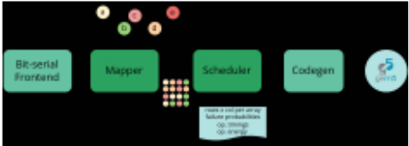
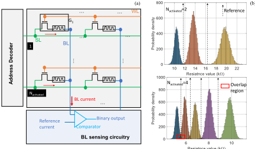
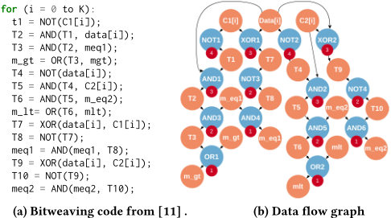
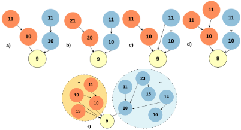
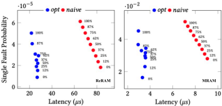
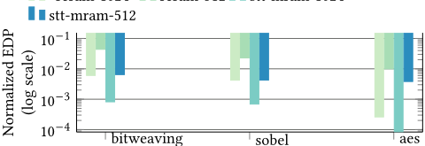

SHERLOCK：面向 NVM 的高效且可靠的批量按位运算调度
论文针对数据库、Web 搜索、加密、图像处理等应用中批量按位运算在传统 von Neumann 架构下因处理与存储间数据搬运而导致高延迟、高能耗的问题，提出面向 NVM 存内计算（CIM）的映射与调度框架 Sherlock。方法上，Sherlock 从 C 程序经 pycparser 生成 AST 并构建 DFG/DAG，按 b-level 优先级将操作数依赖感知地聚类映射到 CIM 阵列各列，最小化列间数据搬运并最大化数据复用，再通过节点替换与跨簇指令合并压缩指令数，同时将工艺偏差导致的 decision failure 概率纳入性能-能耗-可靠性协同优化。基于扩展 gem5、NVSim 与 SPICE 特性化的评估显示：相对 SOTA 性能约 10×、能耗约 4.6×、可靠性约 1.5× 提升，相对 CPU 的 EDP 增益最高达三个数量级。该工作属于 NVM CIM 编译/调度层研究，不涉及 RTL 实现与验证方法学，与本团队内存接口 IP 技术栈直接关联较弱。
批量按位运算广泛存在于数据库、Web 搜索、DNA 比对、加密、图处理等领域，在传统架构下需在内存总线上搬运大量数据，造成高延迟与高能耗。现有 CIM 方案难以处理不同应用区域需要不同粒度、不同逻辑运算的复杂应用，映射不当会引起大量 subarray 内/间数据搬运与数据复制；同时 NVM 工艺不成熟且 CIM 具有模拟特性，多行同时激活（MRA）虽提升性能却降低 sensing margin、加剧 decision failure，性能与可靠性构成直接权衡，缺乏面向该权衡的映射与调度方法。
Sherlock 为端到端自动化框架：以高层应用与器件模型为输入，用 pycparser 从 C 程序生成 AST 并构建 DAG，计算操作节点 b-level 优先级；核心是优化的映射算法——按所需列数 k 将 DAG 操作节点聚类（五种节点分配场景加基于 Eq.1 打分的复杂决策，簇尺寸受 C_MaxSize 约束），使跨簇依赖最小化，再将簇映射到 CIM 阵列各列；随后进行节点替换（同类型操作合并为多操作数节点，需考虑目标器件 MRA 对可靠性的影响）与跨簇指令合并（依赖检查后合并读写指令）以减少指令数；可靠性方面基于 LRS/HRS 电阻统计分布与参考电阻比较建模 decision failure 概率 P_DF，并分析 MRA 行数对性能-可靠性权衡的影响。
相对 state-of-the-art：性能提升约 10×，能耗改善约 4.6×，可靠性（P_app）约 1.5× 提升
优化映射平均能耗改善 5.4×；节点替换变换使 naive 映射在所有配置下延迟平均降低 1.28×
Bitweaving 在 512×512 与 1024×1024 阵列上：ReRAM 性能提升 3.49×/3.1×，STT-MRAM 提升 2.74×/4.76×；Sobel 在 ReRAM 上相对 naive 映射提升 13.5×/6.94×
opt 使 P_app 平均改善 1.5×（ReRAM）与 1.3×（STT-MRAM）；ReRAM 的 P_app < 10^-4 可视为高可靠，STT-MRAM 的 P_app ≈ 10^-2 仅适合容忍结果偏差的应用
相对 CPU：EDP 增益最高达三个数量级，其中 STT-MRAM 相对 ReRAM 有一个数量级优势
据论文自述，这是首个在 NVM CIM 映射/调度中显式考虑 decision failure 并进行性能-能耗-可靠性协同优化的工作；区别于先前按广度优先遍历 DFG、列主序存放操作数而导致大量数据搬运与复制的方法，Sherlock 通过依赖感知的 DAG 聚类映射减少列间数据移动，并利用列级细粒度操作控制与跨簇指令合并提升并行度、压缩指令数。
相关度级别：low
命中能力域：无明显对应
理由：论文核心贡献是 NVM 存内计算的编译层映射/调度算法与器件级 decision failure 统计建模，属于计算机体系结构/存内计算研究方向；其硬件目标（scouting logic CIM 阵列）为外部假设，论文不涉及 RTL 设计与实现、综合/时序收敛、UVM/formal 验证、仿真加速或验证自动化等团队能力域。团队产品线为 LPDDR/DDR5/HBM4/UCIe 等内存与互连接口 IP，与 NVM CIM 计算阵列分属不同技术方向，七个能力域均无实质命中；其性能-能耗-可靠性协同权衡与 workload 驱动评估思路仅具泛化参考价值，故判定为 low。
建议动作：仅了解结论
SHERLOCK：非易失性存储器（NVM）中高效可靠批量按位运算的调度
Hamid Farzaneh 1，João Paulo C. de Lima 1,2，Ali Nezhadi Khelejani 3，Asif Ali Khan 1，Mahta Mayahinia 3，Mehdi Tahoori 3 和 Jeronimo Castrillon 1,2,4
1 德累斯顿工业大学（TU Dresden），2 ScaDS.AI Dresden/Leipzig，3 卡尔斯鲁厄理工学院（Karlsruhe Institute of Technology），4 巴克豪森研究所（Barkhausen Institut），德国
批量按位运算在数据库、网络搜索、密码学和图像处理等应用领域中十分常见。这些领域不断增长的数据量和处理需求，往往导致传统系统架构中较高的能耗与延迟，其主要原因在于处理子系统与存储子系统之间的数据搬运。非易失性存储器（NVM），例如 RRAM、PCM 和 STT-MRAM，为以存内计算（CIM）方式执行批量按位逻辑运算提供了便利。将复杂应用高效地映射到这些支持 CIM 的 NVM 上并非易事，甚至可能导致性能下降。本文提出 Sherlock，一种新颖的映射与调度方法，用于在 NVM 中高效执行批量按位运算。Sherlock 对性能与能耗进行协同优化，在性能和能耗方面分别以 10 倍和 4.6 倍的优势超越现有最先进方法。
存内计算、批量按位逻辑、调度、可靠性
Hamid Farzaneh 1 , João Paulo C. de Lima 1,2 , Ali Nezhadi Khelejani 3 , Asif Ali Khan 1 , Mahta Mayahinia 3 , Mehdi Tahoori 3 and Jeronimo Castrillon 1,2,4 。2024。SHERLOCK：非易失性存储器（NVM）中高效可靠的批量按位运算调度。载于第61届ACM/IEEE设计自动化会议（DAC '24），2024年6月23日至27日，美国加利福尼亚州旧金山。ACM，美国纽约州纽约，共6页。https://doi.org/10.1145/3649329.3658485
批量按位运算在数据库、网页搜索、DNA 比对、加密、图处理、网络和机器学习中至关重要。WideTable 和 BitFunnel 等创新方法利用这些运算来加速数据扫描和搜索引擎索引构建，许多实际数据库也支持位图索引 [1]。然而，在传统的冯·诺依曼（von Neumann）系统上，这些运算需要在存储器总线上进行大量数据传输，从而导致高延迟和高能耗。
近期研究表明，通过最小化数据搬运，可以在访存密集型应用中实现显著的性能和能耗改进 [2]。一种减少数据搬运的方法是利用存储器件的物理特性，包括传统 SRAM/DRAM 以及
允许免费制作本作品全部或部分的数字或硬拷贝副本供个人或课堂使用，前提是这些副本并非为营利或商业优势而制作或分发，且副本在首页带有本声明和完整引用信息。本作品中第三方组件的版权必须得到尊重。对于所有其他用途，请联系所有者/作者。
ACM ISBN 979-8-4007-0601-1/24/06
© 2024 版权归所有者/作者所有。
first.lastname@{tu-dresden.de,kit.edu}

新兴非易失性存储器（NVM）技术，并在存储器内执行逻辑运算（CIM）。这减少了数据搬运，并带来了前所未有的并行性，使得可以一次性对多个大向量执行按位运算。近期已有大量方案利用 CIM 来加速各领域的访存密集型应用，或者完全在主存内进行 [1]，或者在存储设备内进行 [3]。
许多现有的 CIM 逻辑解决方案难以应对复杂应用，在这类应用中，不同的应用区域需要以不同的粒度执行不同的逻辑运算。这主要是因为将多个应用区域高效地映射到存储阵列、处理更细的粒度以及管理部分结果都构成了重大挑战，并且往往导致大量的子阵列内和子阵列间数据搬运。在 NVM-CIM 的背景下，这变得更具挑战性，因为它需要仔细考虑写操作及其对可靠性的影响。执行可靠的 NVM-CIM 具有挑战性。首先，NVM 的制造工艺尚不够成熟，且容易受工艺偏差影响。其次，NVM-CIM 具有模拟特性，这使其对工艺偏差的影响更加敏感。因此，NVM-CIM 的输出存在被错误生成的可能性。这一可靠性挑战被称为决策失效（decision failure）。
本节介绍存内计算（CIM）的基本原理，并概述我们对 CIM-logic 类和整体架构的假设。
忆阻器件利用阻值状态来存储数据：高阻态（HRS）表示 '1'，低阻态（LRS）表示 '0'。与传统存储器技术类似，非易失性存储器（NVM）器件被组织为规模为 𝑚 × 𝑛 的阵列，即 𝑚 行 𝑛 列。所有忆阻阵列都支持同时激活多条字线（行），并且可以对读出放大过程加以调整，以实现按列的逻辑运算，例如 (N)OR、(N)AND 和 X(N)OR，其实现方法称为 scouting logic [6]，该方法基于操作数阻值与参考电阻的比较进行运算，如图 2(a) 所示。此外，行复制、行缓冲区内容的旋转以及 NOT 等运算，可以利用行缓冲区中额外的 CMOS 电路以原位方式实现。复制操作通常通过行克隆（row cloning）[8] 来实现。尽管如此，我们映射与调度方案的核心并不依赖于特定的硬件实现方式，同样适用于其他类型的 CIM。
CIM 阵列中由 𝑛 个列所实现的 CIM 运算可以像 [9] 中那样属于同一类型，也可以是不同类型，从而对运算提供更细粒度的控制。后者通过使用同时连接到读出放大器和参考电阻的多路选择器来实现，这些多路选择器由 CIM 指令中的配置位驱动。这种按列控制使得可以通过选择性地激活子阵列中的若干列并在其上执行计算，从而对任意数据模式进行运算。它还有助于在同一子阵列内利用指令并行性，只要各运算共享相同的行，便可在不同的列集合上执行不同的运算。
由于其固有的工艺偏差，忆阻器件的低阻态（LRS）和高阻态（HRS）值并非固定值，而是服从统计性的电阻值（kΩ）

分布。除此之外，所采用的比较器以及 scouting 逻辑所需的参考电阻也可能存在不完善之处，从而导致 NVM-CIM 输出被错误地生成，即所谓的判决失败（decision failure）。判决失败的概率 ( 𝑃 𝐷𝐹 ) 可以通过图 2(b) 所描绘的重叠区域来估计，其主要受两个因素影响。其一，器件技术：LRS 与 HRS 之间的差距越大， 𝑃 𝐷𝐹 就越低。与 STT-MRAM 相比，PCM 和 ReRAM 器件具有更宽的差距，因而 𝑃 𝐷𝐹 更小。其二，同时激活的行数会直接影响 𝑃 𝐷𝐹 。增加激活的行数可以提升性能，但也会减小感测裕度，并显著增大 𝑃 𝐷𝐹 。
映射问题：大多数先前的工作都假设所有工作负载都可以使用固定数量的行来缓冲中间结果，并且所有输入/中间数据都能容纳在单个阵列的各行之中。这在 NVM 技术中是不现实的，因为阵列规模不可能任意大 [10]。在阵列规模较小的情况下，将复杂应用（即较大的数据流图（DFG））映射到 CIM 阵列上并非易事。现有方法以广度优先的顺序遍历 DFG，并按列主序将操作数节点存储在阵列中。这会导致大量的数据移动和数据复制。为解决这一问题，必须考虑 DFG 内部的依赖关系，并以防止某一列中的操作数依赖于其他列中操作数的方式将操作数映射到 CIM 阵列，从而大幅减少数据移动，进而降低执行时间和能耗。
如图 1 所示，Sherlock 获取输入应用的高层表示，并生成 DFG。它采用我们提出的新型映射与调度算法，找到操作数在 NVM 阵列上的高效映射，并生成高效的代码。
为便于本节的阐述，我们以位编织（bitweaving）作为贯穿全节的运行示例。图 3a 展示了位编织方法用于求取谓词 BETWEEN C1 AND C2（即数据库中的列扫描）的伪代码。该内核主要由批量位运算构成，因此非常适合存内计算（CIM）。该应用单次迭代的 DFG 如图 3b 所示。需要注意的是，我们的 DFG 始终是一个有向无环图（DAG），其中节点表示操作数或中间结果（橙色节点）以及操作（蓝色节点），箭头则指示操作之间的依赖关系。在本工作中，我们从 C 程序出发，并使用 pycparser 生成抽象语法树（AST），该语法树是生成应用 DAG 的基础。所有操作节点均为单位权重，而操作数节点和边的权重则为零。对于 DAG 中的每个操作节点，我们计算其 b-level [12]（如图 3b 中红色圆圈所示），它表示节点的优先级，并被下文所讨论的映射与调度算法使用。

3.2.1 代码生成。在映射完 DAG 中某个 op 的所有操作数之后，算法接着为其生成指令（第 18 行）。图 4 展示了为某个应用所生成的指令片段。这些生成指令的格式被设计为与我们的仿真基础设施兼容。指令中的第一个字段指示操作类型，可以是 read、write 或 shift（见第 2.1 节）。第二个字段表示地址，由阵列 ID、列和行组成。对于标准的 read 和 write 操作，只需要这两个字段。在存内计算（CIM）操作的情况下，第三个字段指定针对各个列的逻辑运算。shift 操作是一种特殊操作，用于对行缓冲区内容进行逻辑移位以实现对齐，需要以阵列 ID、移位方向和移位距离作为参数。
在该算法中，第 3 行初始化布局（layout）数据结构，该结构存储数据及其在存储器中的到达周期。第 4 行从 DAG 中计算出节点列表 𝑛𝑞，并按照 op 节点的优先级（b-level）进行排序。从第 5 行到第 19 行的循环对 𝑛𝑞 中的所有节点进行迭代。对于每个节点，算法首先提取入度和出度，它们分别表示需要映射到存储器的操作数和输出，然后检查布局结构，以确定是否已有某些操作数被映射（在操作数被多个 op 共享的情况下）。基于这些信息，算法计算 size（第 6 行），其表示必须映射到阵列中的操作数数量。如果当前列（col 𝑖）有足够的空闲位置来容纳 𝑠𝑖𝑧𝑒 个操作数，则将它们映射到存储器中，并更新布局和索引值（第 9、10 行）。否则，将 𝑚 - 𝑠𝑖𝑧𝑒 个元素存储在当前列中，其余元素则映射到下一列（第 11-17 行）。
For larger DAGs, the naive mapping leads to substantial data movement. This section explains our novel mapping algorithm, designed to efficiently map DAG operands onto a specified set of columns while taking into account considerations such as data reuse, and effective utilization of the CIM array.
Algorithm 2 presents our mapping approach. It calculates 𝑘 , the number of columns needed for mapping the operand nodes in the DAG, by dividing the number of operands on the column size ( 𝑚 ) (Line 3). Subsequently, it identifies 𝑘 clusters of op nodes in the DAG, each to be mapped to one of the 𝑘 columns (Line 5). The size of the clusters (measured as set cardinality | 𝐶 | ) is constrained by both C 𝑚𝑎𝑥𝑆𝑖𝑧𝑒 which is computed from the column size ( 𝑚 ) and the in-/out-degrees of the nodes within the cluster. The algorithm strategically minimizes dependencies between nodes across clusters to reduce data movement between columns.

3.3.1 Clustering DAG op nodes. Similar to the naive mapping, Algorithm 2 also computes the b-level (priority) of the op nodes in the DAG and stores it in 𝑛𝑞 (Line 18). Starting with the highest priority nodes, the algorithm iterates over the node queue. For each node, if it does not have a predecessor, a new cluster is created, and the node is assigned to it (Line 23). In cases where a node already has predecessors, these predecessors have already been assigned to one or more clusters. The assignment of the node to a cluster can follow any of the subsequent scenarios.
Case 2: If a node has multiple predecessors, and the clusters of the predecessors exhibit similar properties, i.e., same size | 𝐶 | and identical predecessors priorities (as illustrated in Fig. 5a), the algorithm merges the clusters of the predecessors, provided that the new size does not exceed C 𝑚𝑎𝑥𝑆𝑖𝑧𝑒 . Otherwise, the node is randomly assigned to one of the predecessor's clusters.
Case 1: If there is exactly one predecessor, and the size of the predecessor's cluster is less than C 𝑚𝑎𝑥𝑆𝑖𝑧𝑒 , the node is assigned to this cluster. Otherwise, the node is assigned to a new cluster.
If the parent nodes' clusters have different properties, then the algorithm makes the assignment based on the priority difference to the parent node, the dependence of the node on different clusters, and the size of the clusters.
Case 4: In situations like the one depicted in Fig.5c, where the node exhibits greater dependence on one cluster (right in this case), it is assigned to that cluster.
Case 3: When the size and dependencies are identical (see Fig. 5b), the assignment is determined by comparing the smaller priority difference between the current node and its predecessors. In the given example, the priority difference of the node (yellow) with the right parent (blue) cluster is smaller than that with the left cluster, the node is assigned to the right cluster. This is because that node potentially lies in the critical path of the right cluster.
Input: target, DAG Output: layout, inst 1 nq ← [], inst ← [], clusters ← [], i ← 1; 2 layout = new layout(target); 3 𝑘 ← operands(DAG) / 𝑚 ; // No. of cols required for DAG operands 4 /* Find the list of clusters where each cluster is a list of nodes. */ 5 clusters = FindClusters(DAG, 𝑘 ); 6 /* Map Operands of each cluster's nodes to a CIM array column. */ 7 for 𝐶 ∈ clusters do 8 for node ∈ 𝐶 do 9 layout.update(col 𝑖 , node, DAG[node]); 10 i ← i+1 ; 11 inst ← inst.append(merge(genInst(clusters, layout))); 12 end for 13 i ← 1 ; 14 end for 15 return layout, inst; 16 /* Function to find 𝑘 op nodes clusters in the DAG. */ 17 FindClusters DAG, 𝑘 : 18 pNodes ← [] nq ← b-level(DAG); 19 clusters ← []; // List of clusters where each cluster is a list of nodes 20 for node in nq do 21 pNodes = pred(node); 22 if pNodes = ∅ then 23 clusters = clusters ∪ {node} ; 24 else 25 tc = GetTargetCluster(node); // Find target using Eq. 1 26 tc = tc ∪ node 27 end if 28 end for 29 /* Merge smaller clusters to end up having 𝑘 in total */ 30 clusters ← MergeClusters(clusters, 𝑘 , C 𝑚𝑎𝑥𝑆𝑖𝑧𝑒 ); 31 return clusters;
3.3.3 Optimizations. If two op nodes, each with 𝑥 and 𝑦 operands, respectively, have the same operation type, and the output of one node is solely used once in the other node, a node substitution is performed. This replaces two nodes with a one equivalent node of the same type and 𝑥 + 𝑦 operands. This optimization should takes into account the characteristics of the target model, such as the simultaneous enabling of rows and their impact on reliability.
| Technology-level parameters | Technology-level parameters |
|---|---|
| STT-MRAM model [14] | - Radius = 20 nm - Barrier Material = MgO - RA = 7.5 Ω 𝜇𝑚 2 - Nominal TMR = 150% |
| ReRAM model: JART VCM v1b Read variability [15, 16] | - Radius of the filament = 45 nm - Length of the disc region = 0.6 nm - Initial oxygen vacancies concentration: LRS = 3, HRS = 0.009 [10 26 / 𝑚 3 ] |
| Circuit-level parameters on Cadence virtuoso | Circuit-level parameters on Cadence virtuoso |
| CMOS technology | Global foundry 22FDX |
| Standard VDD / Temperature | 800 mV / 27 ◦ 𝐶 |
| Array-level parameters on NVSim [13] | Array-level parameters on NVSim [13] |
| Squared array dim. {Data width (bit)} | 128 {512}, 256 {1024}, 512 {2048}, 1024 {4096} |
| System-level parameters on gem5 [17] | System-level parameters on gem5 [17] |
| CPU, ISA, Clock | In-Order CPU, X86, 1GHz |
| L1I/L1D/L2: size, latency | 16/64/256 KiB, 2/2/20 Clock Cycle |
| Technology-level parameters | Technology-level parameters |
Instructions merging across clusters: During instruction generation after the clusters mapping onto the CIM array, our algorithm identifies and merges instructions across clusters. Recall the instruction format from Fig. 4. Suppose the first instruction in cluster1 is Read [0][1,5,9,13][5] (from array 0, row 5, read columns 1, 5, 9, and 13), and the first instruction in cluster 2 is Read [0][6,8][5] (from array 0, row 5, read columns 6 and 8). The algorithm merges these instructions and issues a single instruction Read [0][1,5,6,8,9,13][5] . Before any merging, a dependency check is always performed to ensure that dependencies are not violated. This merging significantly reduces the number of instructions in the generated code.
我们在评估中使用了 gem5 模拟器的扩展版本。表 1 总结了我们的系统配置与参数。对于阵列级延迟和能耗指标，在考虑层次化组织结构与互连线的情况下，我们使用 NVSim [13]。我们对每个非易失性存储器（NVM）单元进行 SPICE 仿真，以确定低阻态（LRS）和高阻态（HRS）下的阻值水平。随后，我们利用这些参数，通过对分布进行统计建模，计算判定失败的概率，该概率由图 2b) 中的重叠区域表示。
我们在以下应用上对 Sherlock 进行了评估：数据库：为了利用中央处理器（CPU）的单指令多数据（SIMD）能力，BitWeaving [11] 提出了两种表示方式：BitWeaving-H 和 BitWeaving-V。我们关注 BitWeaving-V，并将其记为 BitWeaving。图像处理：Sobel 边缘检测是一种被广泛使用的方法，它计算图像的一阶导数，进而确定边缘处像素强度的差异。我们使用了 [18] 中提出的位切片实现。加密：高级加密标准（AES）是一种被广泛使用的对称密钥加密算法，通过跨多轮的代换-置换操作来确保加密安全。我们使用了由 Usuba 编译器 [19] 生成的 AES 位切片版本。
表 2 展示了在不同规模（512、1024）的阵列上执行的应用的对比分析，这些应用采用两种不同的技术，即阻变存储器（ReRAM）和自旋转移矩磁阻存储器（STT-MRAM），并利用多行激活（MRA）来获得恰好 2 个操作数的操作（较慢但可靠）以及具有 ≥ 2 个操作数的操作（较快但可靠性较低）。对于 MRA 为 2 的情况，我们使用原始的有向无环图（DAG）；而对于 ≥ 2 的情况，我们使用应用第 3.3.3 节所述变换后得到的输出 DAG。随后，DAG 通过朴素（naive）和优化（opt）算法被映射到硬件上。
在能耗方面，优化映射中写操作与读操作的减少带来了平均 5.4× 的整体能耗改善。通过使用第 3.3.3 节所述的变换，存储器操作总体上有所减少，这直接影响了朴素映射，使其在所有配置下的延迟均持续降低，平均降低幅度为 1.28×。对于 opt 而言，MRA ≥ 2 的趋势略有不同。节点替换优化减少了 DAG 中的整体操作数量，但使得映射器难以合并指令。因此，对于较小的阵列规模，存在能耗和延迟略有增加的情况。
使用优化方法将 Bitweaving 内核映射到 512 × 512 和 1024 × 1024 的阵列规模上，在 ReRAM 技术下分别带来了 3.49× 和 3.1× 的性能提升，在 STT-MRAM 技术下分别带来了 2.74× 和 4.76× 的性能提升。阵列中的行数较少时，执行应用需要更多的列，因此实现有效的映射对性能提升至关重要。以 Sobel 应用为例，在 ReRAM 技术下，对于 512×512 和 1024 的阵列规模，采用优化映射相比朴素映射分别带来了 13.5× 和 6.94× 的显著改进。这一改进的原因在于 Sobel 应用的 DAG 较大，其使用的列数多于 Bitweaving 应用。AES 表现出与 Sobel 相似的特性，并呈现相似的趋势。
为了考察操作类型和 MRA 对应用可靠性的影响，我们使用下式计算应用中至少发生一次故障的概率：𝑃 𝑎𝑝𝑝 = 1 - 𝑁 𝑖 = 1 ( 1 - 𝑃 𝐷𝐹𝑖 )，其中 𝑁 为操作总数，𝑃 𝐷𝐹𝑖 为操作 𝑖 发生错误的概率。当应用允许合并具有超过 2 个操作数的布尔操作时，操作总数会减少，这也可能降低 𝑃 𝑎𝑝𝑝。然而，这些操作具有较高的 𝑃 𝐷𝐹，会导致应用中发生单次故障的概率增加。
优化技术对可靠性有显著影响。平均而言，opt 在针对执行时间和能耗进行优化的同时，分别使 ReRAM 和 STTMRAM 的 𝑃 𝑎𝑝𝑝 改善了 1.5 × 和 1.3 ×。在朴素优化中，概率 𝑣𝑠. 延迟曲线呈线性，这是因为选择合并哪些操作并不随映射和调度决策而改变，
图 6 展示了增加具有两个以上操作数的操作数量所产生的影响。趋势表明，当允许更多具有超过 2 个激活行的操作时（由数据点上方的百分比给出），延迟得到改善，而可靠性仅有少量牺牲。单次故障概率在多大程度上反映到应用的可靠性上，还取决于存储器技术。𝑃 𝑎𝑝𝑝 < 10 - 4 可被视为高度可靠，ReRAM 正属于这种情况（图 6a）。在 STT-MRAM 中，由于较小的 HRS/LRS 比值，XOR 和 OR 操作变得非常不可靠。因此，我们考虑采用基于 NAND 的 XOR 和 OR 实现（如图 6b 所示）。尽管如此，STT-MRAM 下 𝑃 𝑎𝑝𝑝 ≈ 10 - 2 仅适用于能够容忍一定错误的应用。
| Tech | Benchmark | array size ( 𝑁 × 𝑁 ).# rows in MRA | naive.1024.2 | naive.1024.≥ 2 | naive.512.2 | naive.512.≥ 2 | opt 512.1024.2 | opt 512.1024.≥ 2 | opt 512..2 | opt 512..≥ 2 |
|---|---|---|---|---|---|---|---|---|---|---|
| Bitweaving | Latency ( 𝜇𝑠 ) | 0.36 | 0.28 | 1.44 | 1.13 | 0.16 | 0.16 | 0.41 | 0.46 | |
| Energy (mJ) | 0.18 | 0.14 | 0.73 | 0.57 | 0.08 | 0.08 | 0.21 | 0.23 | ||
| ReRAM | Sobel | Latency ( 𝜇𝑠 ) | 0.65 | 0.51 | 2.61 | 2.04 | 0.18 | 0.19 | 0.47 | 0.48 |
| Energy (mJ) | 0.33 | 0.26 | 1.32 | 1.03 | 0.09 | 0.09 | 0.24 | 0.24 | ||
| AES | Latency ( 𝜇𝑠 ) | 1147.15 | 902.29 | 7111.4 | 5682.5 | 29.78 | 25.32 | 152.6 | 155.9 | |
| Energy ( 𝜇𝐽 ) | 25.9 | 20.37 | 155.32 | 136.61 | 2.08 | 1.77 | 13.1 | 10.9 | ||
| Bitweaving | Latency ( 𝜇𝑠 ) | 0.36 | 0.28 | 1.44 | 1.13 | 0.16 | 0.16 | 0.41 | 0.46 | |
| Energy (mJ) | 0.18 | 0.14 | 0.72 | 0.57 | 0.08 | 0.08 | 0.21 | 0.23 | ||
| STT-MRAM | Sobel | Latency ( 𝜇𝑠 ) | 0.65 | 0.51 | 2.61 | 2.04 | 0.18 | 0.19 | 0.47 | 0.48 |
| STT-MRAM | Energy (mJ) | 0.33 | 0.26 | 1.31 | 1.02 | 0.09 | 0.09 | 0.24 | 0.24 | |
| AES | Latency ( 𝜇𝑠 ) | 124.69 | 98.07 | 785.54 | 637.45 | 11.25 | 10.55 | 73.25 | 75.57 | |
| Energy ( 𝜇𝐽 ) | 4.6 | 5.4 | 30.7 | 23.32 | 1.45 | 1.36 | 8.16 | 8.7 |
| Tech | Benchmark | array size ( 𝑁 × 𝑁 ).# rows in MRA | naive.1024.2 | naive.1024.≥ 2 | naive.512.2 | naive.512.≥ 2 | opt 512.1024.2 | opt 512.1024.≥ 2 | opt 512..2 | opt 512..≥ 2 |

而在 opt 中，对最佳合并操作的选择高度依赖于这些决策，从而使曲线呈现相当不规则的形态。最后，从图 6 中还可以看出 ReRAM 与 STT-MRAM 之间的性能-可靠性权衡，这表明 STT-MRAM 是加速那些能够容忍结果精度出现一定偏差的应用的良好存储器候选。
图 7 比较了我们的优化配置相对于 CPU 的能量延迟积（EDP）。平均而言，与 CPU 相比，收益高达三个数量级。与 ReRAM 相比，STT-MRAM 可提供一个数量级的收益。Bitweaving、sobel 和 AES 呈现出各自不同的曲线形态，展示了存储器容量变化对其能量延迟积的影响。
reram-1024 reram-512 stt-mram-1024
归一化 EDP

我们提出了 Sherlock，这是一种专为在非易失性存储器（NVM）中高效映射批量按位运算而量身定制的创新映射与调度方法。对于给定的有向无环图（DAG）和系统模型，我们的算法能够智能地确定操作数在存内计算（CIM）阵列列上的映射，其目标是最小化数据搬运并最大化数据复用与阵列利用率。我们还探讨了采用变换来执行具有两个以上操作数的运算对最终可靠性和性能的影响。我们在多个基准测试上的评估表明，与最先进方法相比，Sherlock 显著改善了性能（∼10×）、能耗（∼4.6×）和可靠性（∼1.5×）。